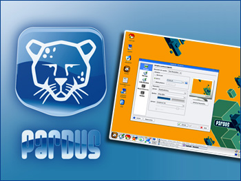

|
Ulusal Dağıtım Projesi ilk ürününü çıkardı:
|
 |
Uludağ ProjeleriUludağ Projeleri hakkında bilgi almak için tıklayın |
Uludağ Belgeleri
24 Kasım 2004
18 Kasım 2004 |
Uludağ Haberleri07 Aralık 2004 Uludağ Haftalık Bülteni arşivi yayınlanmaya başlandı. Bültene rss bağlantısı ile de ulaşabilirsiniz. 19 Kasım 2004 Haber bültenimizin ilk sayısı çıktı... 03 Kasım 2004 Yeni web sayfalarımız yayında... |